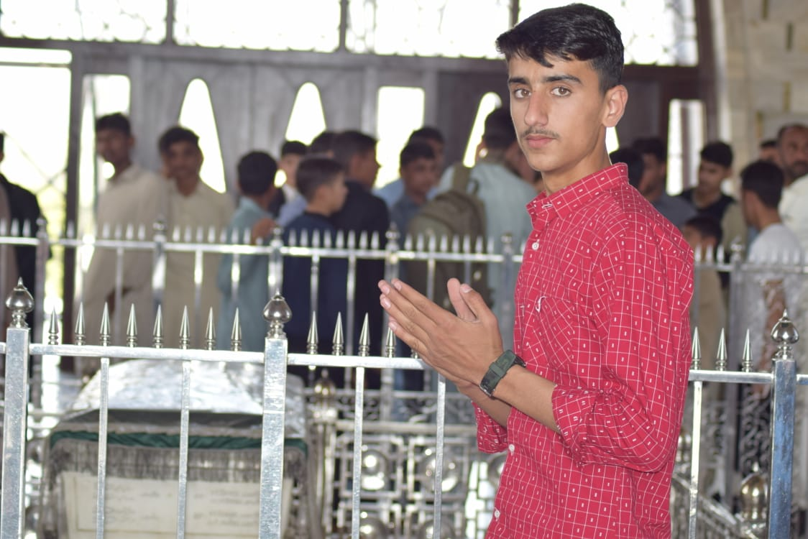
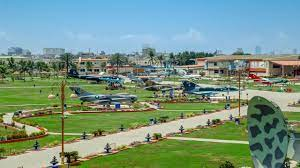

Mazar e quaid and PAF muesium


Places to Explore:
- Mazar-e-Quaid: Pay homage at the mausoleum of Muhammad Ali Jinnah, the founder of Pakistan
- PAF Museum Karachi: Dive into the rich history of the Pakistan Air Force and aviation.
- Karachi Sea View: Enjoy the coastal beauty and vibrant atmosphere at Sea View Beach.
- Clifton Beach: Relax at the popular Clifton Beach with its bustling surroundings.
Things to Engage In:
- Museum Exploration: Immerse yourself in the fascinating exhibits at PAF Museum.
- City Sightseeing: Explore the diverse culture and landmarks of Karachi.
- Mazar-e-Quaid Visit: Experience the solemnity and historical significance of Mazar-e-Quaid.
Local Insights:
- Best Time to Visit: Winter (October to March) for milder temperatures.
- Culinary Delights: Try Karachi's famous Biryani and seek out local street food.
- Dress Comfortably: Karachi can get warm, so pack lightweight clothing.